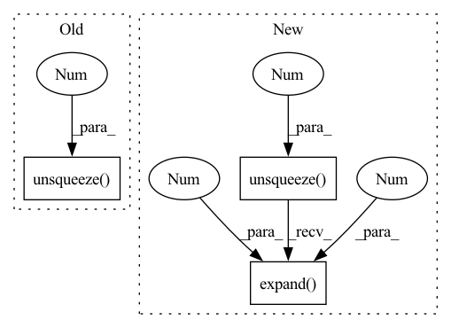

Pattern ID :29270
Before Change
k = self.w_ks(mel_encoding)
v = self.w_vs(mel_encoding)
src_mask = src_mask.float().unsqueeze(-1 ) // [batch, seq_len, 1]
mel_mask = mel_mask.float().unsqueeze(-1) // [batch, mel_len, 1]
attn_mask = torch.bmm(src_mask, mel_mask.transpose(-2, -1)).bool() // [batch, seq_len, mel_len]
After Change
src_len, mel_len = src_mask.shape[1], mel_mask.shape[1]
src_mask_ = src_mask.unsqueeze(-1).expand(-1, -1, mel_len) // [batch, seq_len, mel_len]
mel_mask_ = mel_mask.unsqueeze(1).expand(-1 , src_len, -1 ) // [batch, seq_len, mel_len]
output, attn = self.attention(q, k, v, src_mask=src_mask_, mel_mask=mel_mask_)
In pattern: SUPERPATTERN
Frequency: 4
Non-data size: 3
Instances Fragment ID: 85990320
Project Name: keonlee9420/parallel-tacotron2
Commit Name: 1f98efe5d09778b2b77e291aff63ef6e497c6bb9
Time: 2021-07-26
Author: 1531820402@qq.com
File Name: model/blocks.py
M Class Name: VariableLengthAttention
N Class Name: VariableLengthAttention
M Method Name: forward(5)
N Method Name: forward(5)
M Parent Class: nn.Module
N Parent Class: nn.Module
M File Name: model/blocks.py
N File Name: model/blocks.py
M Start Line: 271
M End Line: 273
N Start Line: 271
N End Line: 273
Before Change
// combine masks along attended time - first encoder and then decoder
mask = torch.cat(
(
encoder_mask.unsqueeze(1 ) .expand(-1, decoder_length, -1),
decoder_mask.unsqueeze(0).expand(encoder_lengths.size(0), -1, -1),
),
dim=2,After Change
// matter in the future than the past)
// or alternatively using the same layer but allowing forward attention - i.e. only
// masking out non-available data and self
decoder_mask = create_mask(decoder_length, decoder_lengths).unsqueeze(1).expand(-1 , decoder_length, -1 )
// do not attend to steps where data is padded
encoder_mask = create_mask(encoder_lengths.max(), encoder_lengths).unsqueeze(1).expand(-1, decoder_length, -1)
// combine masks along attended time - first encoder and then decoder
mask = torch.cat( Fragment ID: 85990322
Project Name: jdb78/pytorch-forecasting
Commit Name: ca4b90615f4bfdeb357d3ad26e492ef8573c7f1c
Time: 2022-04-15
Author: beitner.jan@bcg.com
File Name: pytorch_forecasting/models/temporal_fusion_transformer/__init__.py
M Class Name: TemporalFusionTransformer
N Class Name: TemporalFusionTransformer
M Method Name: get_attention_mask(3)
N Method Name: get_attention_mask(3)
M Parent Class: BaseModelWithCovariates
N Parent Class: BaseModelWithCovariates
M File Name: pytorch_forecasting/models/temporal_fusion_transformer/__init__.py
N File Name: pytorch_forecasting/models/temporal_fusion_transformer/__init__.py
M Start Line: 371
M End Line: 391
N Start Line: 370
N End Line: 395
Before Change
return xs, masks
def _integrate_with_utt_embed(self, hs, utt_embeddings):
speaker_embeddings_projected = self.embedding_projection(utt_embeddings).unsqueeze(1 )
hs = hs + speaker_embeddings_projected // offset phone realization of a speaker
hs = self.speaker_norm(hs)
return hs
After Change
// project embedding into smaller space
speaker_embeddings_projected = self.embedding_projection(utt_embeddings)
// concat hidden states with spk embeds and then apply projection
speaker_embeddings_expanded = F.normalize(speaker_embeddings_projected).unsqueeze(1).expand(-1 , hs.size(1), -1 )
hs = self.hs_emb_projection(torch.cat([hs, speaker_embeddings_expanded], dim=-1))
return hs
Fragment ID: 85990316
Project Name: digitalphonetics/ims-toucan
Commit Name: 5cde43fc07589b8b65d60187a62d9fabea9fbafd
Time: 2022-02-19
Author: florian.lux@ims.uni-stuttgart.de
File Name: Layers/Conformer.py
M Class Name: Conformer
N Class Name: Conformer
M Method Name: _integrate_with_utt_embed(3)
N Method Name: _integrate_with_utt_embed(3)
M Parent Class: torch.nn.Module
N Parent Class: torch.nn.Module
M File Name: Layers/Conformer.py
N File Name: Layers/Conformer.py
M Start Line: 128
M End Line: 130
N Start Line: 136
N End Line: 139
Before Change
], "Cannot use NormalDistributionLoss for positive data"
assert encoder.transformation not in ["logit"], "Cannot use bound transformation such as "logit""
loc = encoder(dict(prediction=parameters[..., 0], target_scale=target_scale))
scale = F.softplus(parameters[..., 1]) * target_scale[..., 1].unsqueeze(1 )
return torch.stack([loc, scale], dim=-1)
class MultivariateNormalDistributionLoss(MultivariateDistributionLoss):After Change
loc = parameters[..., 0]
scale = F.softplus(parameters[..., 1])
return torch.concat(
[target_scale.unsqueeze(1).expand(-1 , loc.size(1), -1 ) , loc.unsqueeze(-1), scale.unsqueeze(-1)], dim=-1
)
Fragment ID: 85990317
Project Name: jdb78/pytorch-forecasting
Commit Name: 0193b8802943f92d3323715a088b99b6e0d96786
Time: 2022-05-18
Author: beitner.jan@bcg.com
File Name: pytorch_forecasting/metrics/distributions.py
M Class Name: NormalDistributionLoss
N Class Name: NormalDistributionLoss
M Method Name: rescale_parameters(4)
N Method Name: rescale_parameters(4)
M Parent Class: DistributionLoss
N Parent Class: DistributionLoss
M File Name: pytorch_forecasting/metrics/distributions.py
N File Name: pytorch_forecasting/metrics/distributions.py
M Start Line: 32
M End Line: 40
N Start Line: 35
N End Line: 40